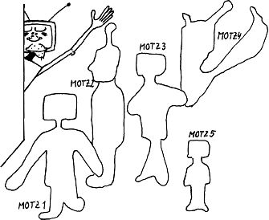

Nascom Journal |
Januar 1982 · Ausgabe 1 |

Hallo liebe Leser,
mit Bedauern mußte ich beim Wühlen durch die Leserpost feststellen, daß sich unser Leserkreis nun langsam in zwei Lager aufspaltet: einmal die wissenschaftlichen Typen und dann die Spielernaturen. Beide Gruppen haben nun die Eigenschaft, daß sie uns anbieten, Artikel nach ihrem Geschmack in der Mitte des Heftes abzudrucken, damit die „andere Partei“ nach dem Entfernen der Seiten dadurch nicht belästigt wird. Ich habe nun mit dem Drucker verhandelt; aber er weigert sich hartnäckig, ein Heft mit zwei Mitten herzustellen. Da nun die Redaktion der Meinung ist, es wäre durchaus Raum für beide Gruppen in einem Heft dieses Umfangs und man müßte nicht unbedingt zwei Hefte herausbringen, habe ich mir diesmal einen besonderen Leser-Service ausgedacht:den MOTZ (Modul zur Oberflächenbehandlung Trivialer Zeichnungen). Dabei handelt es sich um Aufkleber, mit denen Sie z.B. alle Nascompls in einem Heft zukleben können. Aus Platzgründen verschieben wir die Veröffentlichung des MAUL (Modul zum Auslöschen Unbequemer Listings) und des SABBER (SichtABdeckung Banaler Erzeugnisse) auf das nächste Heft. Für die „andere Gruppe“ ist mir noch nichts eingefallen. Bis zu meinem Geistesblitz empfehle ich betroffenen Lesern, sofort beim Anblick eines Artikels mit unbequemem Niveau die Hand vor die Augen zu halten. Auf diese Art könnte doch wohl jeder Leser zufriedengestellt werden.
In diesem Sinne
Ihr Nascompl
Redaktion: Günter Böhm, Günter Kreidl
Wolfgang Mayer-Gürr, Josef Zeller
Ressorts :
Maschinenprogramme:
Günter Böhm, ______________ ___.___
__ Karlsruhe, Tel.____/______
Günter Kreidl, _________ __, ____ Straelen
Tel. _____/____
BASIC und FLOPPY:
Wolfgang Mayer-Gürr,________-_.-_____-____.
____________ ___ ___, ____ Recklinghausen
Tel. _____/_____
Hardware:
Josef Zeller,_______________ __, ____ Neu-Ulm
Verlag: Nascom Journal, c/o MK-Systemtechnik _____-_____-___._, ____ Germersheim Tel._____/____ Telex ______ mksd
Vertrieb: Direktvertrieb durch den Verlag
Erscheinungsweise: monatlich
Bezugspreis: Im In- und Ausland 48.– für ein Jahresabonnement. Abonnements können aus technischen Gründen immer nur für die Dauer eines Kalenderjahres, d.h. vorn 1.1. bis 31.12. laufen. Bei Bestellung nach dem 1.1. werden die fehlenden Hefte mit der ersten Lieferung bis zum Bestellzeitpunkt automatisch mitgeliefert.
Bezugsmöglichkeiten:Durch Bestellung bei MK Systemtechnik (beigefügte Bestellkarte). Bankverbindungen: Alle Zahlungen für das Nascom Journal unter Angabe der Rechnungsnummer nur (!!) an das folgende Konto: Fa. Michael Klein, Sonderkonto _____-___ beim Postscheckamt ____________.
Zahlung: Nach Eingang Ihrer Bestellung erhalten Sie von uns die ausstehenden Hefte bis zur aktuellen Ausgabe sowie eine Rechnung. Bitte, zahlen Sie dann den Rechnungsbetrag auf unser Sonderkonto (s.o.) ein. Bitte keine Vorauszahlungen!
Bitte, Anfragen wegen Abonnements oder Lieferung nicht an die Redaktion sondern nur an den Verlag. Die Autoren tragen die Verantwortung für ihre Beiträge selbst. Für Fehler in Text, Bildern und sonstigen Angaben kann keine Haftung übernommen werden.
| Seite 35 von 35 |
|---|